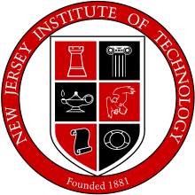

Dalin (Derek) Zhang
PhD candidateSchool of Computer Science and Engineering
University of New South Wales
UNSW Sydney,
NSW 2052 Australia
Phone: (+61) 423-167-393
Email: zhangdalin90@gmail.com
Short Bio
I'm a PhD candidate of Electrical Engineering at New Jersey Institute of Technology. I'm working with Qing Liu from ECE Department. My research interests include High Performance Computing, Cloud Computing and Machine Learning. I'm interested in the interaction between machine learning and systems. I'm excited to bring the power of state-of-art HPC hardware and architecture to machine learning. I'm also generally interested in AI, robotics and other technologies that will bring fundamental changes to the society and people's lives.
Recent News
- [Apr 2019] I passed my dissertation proposal.
- [Jan 2019] I will teach ECE394 - Digital Systems Lab. Checkout the Teaching section for more details.
- [Nov 2018] I passed my QE and became a PhD candidate.
- [Aug 2018] I will teach ECE394 - Digital Systems Lab. Checkout the Teaching section for more details.
- [Jan 2018] I joined the PhD program of Electrical Engineering in the Fall of 2017.
Organizations
